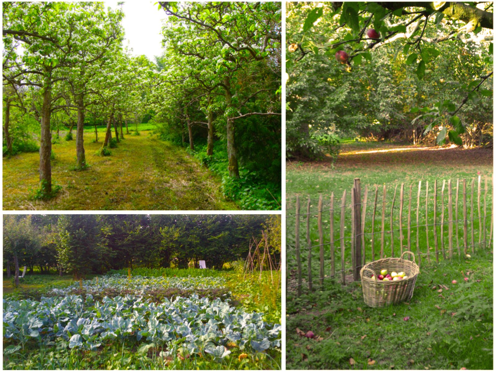
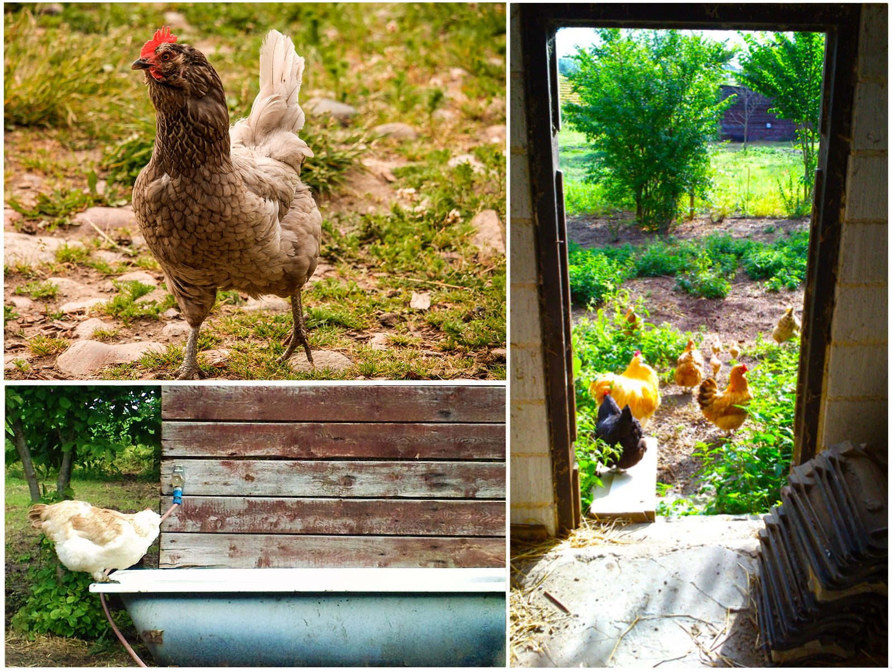
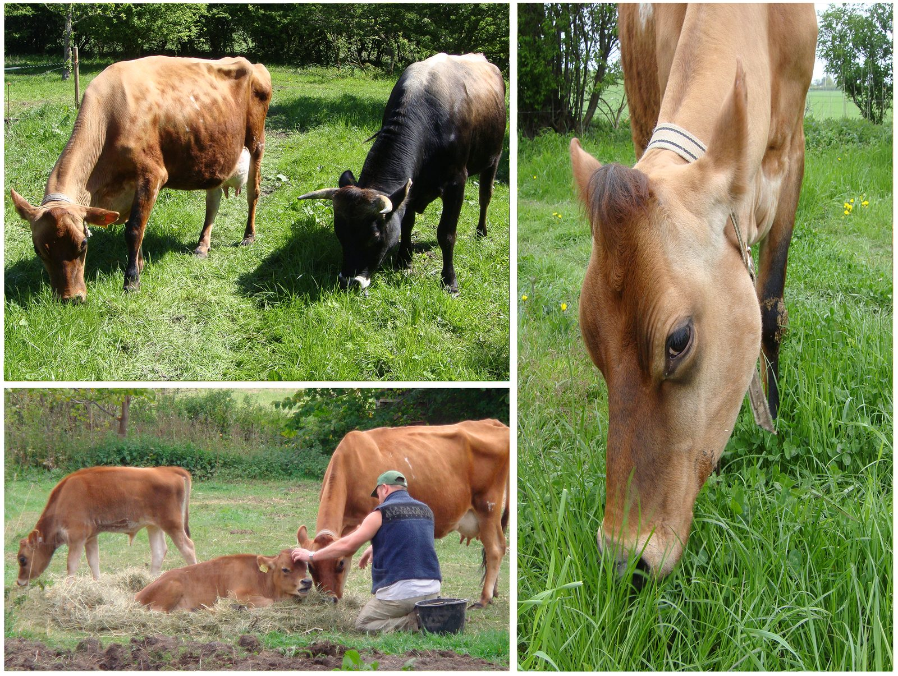
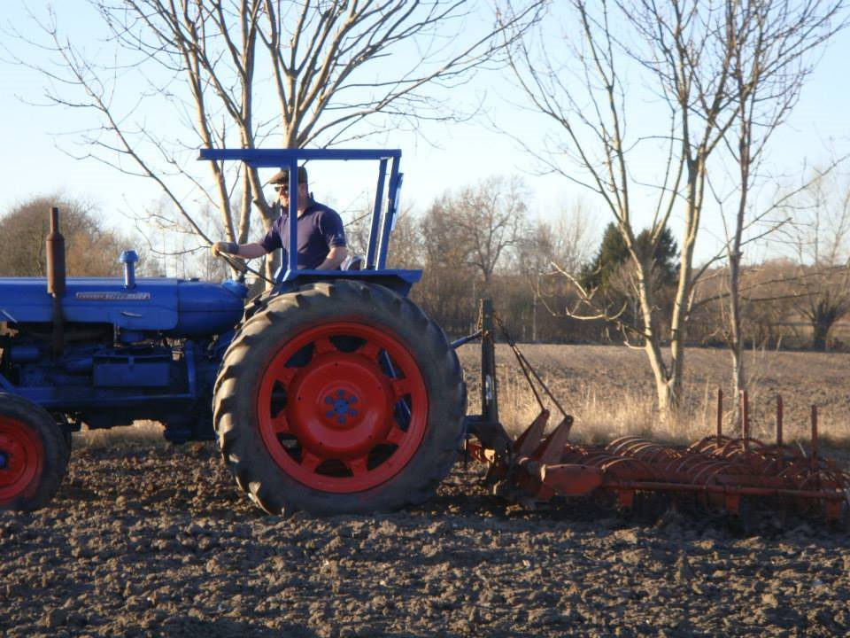
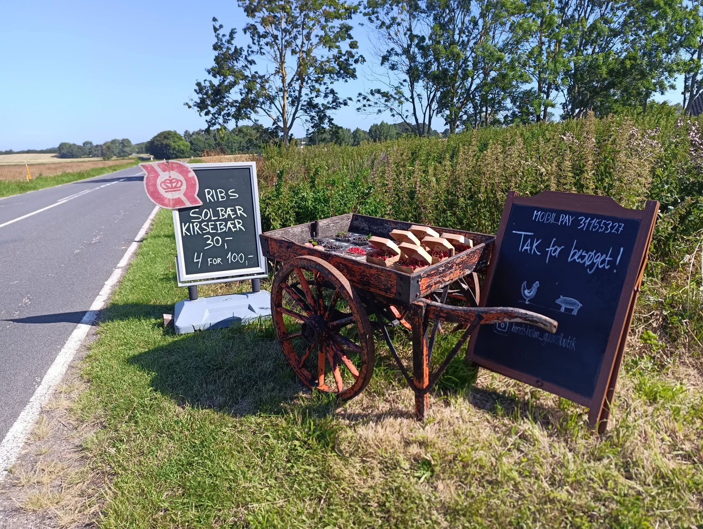
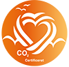
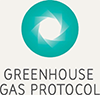
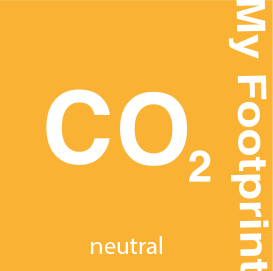

Stålbækgård
Stålbækgård blev grundlagt i 1812. I 2013 overtog Benjamin & Louise gården og gjorde den til et lille, alsidigt landbrug. I dag er rejsen gået videre — fra CO2-neutral til 100% kulstofoptagende, bygget op omkring skovlandbrug, med frugt og grønt som vores primære produktion.



Nutid, fortid og fremtid
Gårdens historie i tre dele — hvor vi er i dag, hvor vi kom fra, og hvor vi er på vej hen.
Nutid
100% frugt, bær og grønt. Skovlandbrug, Hindsholm Gårdbutik og Your Footprint.
Udforsk nutiden →
Fortid
Dyrene, Benji's Burger og de gamle produktlinjer — historien bag den gård, vi er i dag.
Se historien →
Fremtid
Fra CO2-neutral til aktivt kulstofoptagende — næste skridt i skovlandbruget.
Se fremtiden →Fra minilandbrug til kulstofoptagende landbrug
Stammen er det, der holder resten sammen — den fulde rejse, år for år, fra 1812 til i dag.
Stålbækgård grundlægges
Den oprindelige gård og de tilhørende bygninger opføres på Hindsholm.
Stålbækgård overtages af Benjamin & Louise
Gården starter konventionelt — engelske baconsvin, en mindre besætning af Hereford-kvæg, ænder og høns — sammen med en ny gårdbutik.
Biodynamisk strategi udvikles
To års arbejde med at bevæge gården mod økologisk produktion, biodiversitet og hjemmehørende racer.
Økologisk omlægning påbegyndes
Den danske svinerace Sortbroget Dansk Landrace (Danish Black Pied) introduceres.
Bevaring af Sortbroget Dansk Landrace-genetik
Et treårigt avls- og bevaringsprogram. Genmateriale fra fire genetisk adskilte linjer afleveres til Danmarks Nationale Genressourcecenter.
Naturligt Jersey-kvægsystem
Udvikles sideløbende — bygget op omkring dyrevelfærd, biodiversitet og økologiske principper.
Økologisk certificering opnås
På tværs af 11 selvstændigt godkendte produktionsområder. Gården begynder at producere økologisk kalvekød fra sine Jersey-kalve.
Jersey-malke- og dieproces
Køerne malkes for at understøtte diegivning af kalve — og forbedrer dermed den økologiske kødproduktion uden at gå på kompromis med velfærd eller biodiversitet.
Scope 3-kulstofomstilling påbegyndes
Gårdens første formelle Scope 3-program — målingen udvides ud over gårdens egne grænser til hele forsyningskæden.
Certificeret CO2-neutral
Efter Benjamins vurdering den første i Europa for et økologisk landbrug, der styrer sin produktion efter Scope 3 i WRI/WBCSD's Greenhouse Gas Protocol. Det direkte grundlag for Your Footprint.
Husdyrhold udfases helt
De sidste dyr forlader gården. Stålbækgård er nu et rent planteproduktionslandbrug.
Mod 100% kulstofoptagelse
Næste skridt i rejsen: fra neutral til aktivt kulstofoptagende, bygget op omkring skovlandbrug, hvor frugt, bær og grønt er kernen i produktionen — under navnet Hindsholm Gårdbutik ud mod kunderne.

 Louise & Benjamin, Stålbækgård
Louise & Benjamin, Stålbækgård
Stammen og grenene
Gården, butikken og værktøjet — tre dele af samme historie.

Stålbækgård
Gården selv og de to juridiske enheder bag den — hele rejsen fra 1812 til i dag.
Læs hele rejsen →
Hindsholm Gårdbutik
Den kundevendte side af Stålbækgård — vejboden og gårdbutikken.
Besøg butikken →
Your Footprint
Modellen, vi selv udviklede til at regne på gårdens CO2-aftryk.
Se yourfootprint.uk →Beviset er i jorden
Vi praler ikke — vi dokumenterer. Gårdens autorisation og CO2e-regnskab er offentligt tilgængelige.


- Økologisk autorisationNr. 1107649
- GHG-regnskabghg.pdf →
- Fuld rapportreport.pdf →
- Fødevaresmileyfindsmiley.dk →